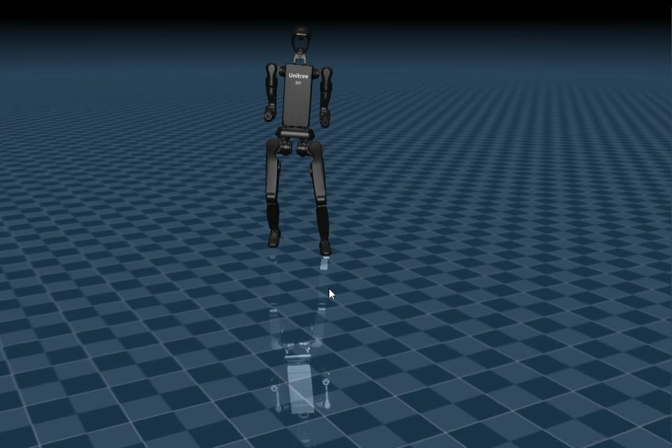
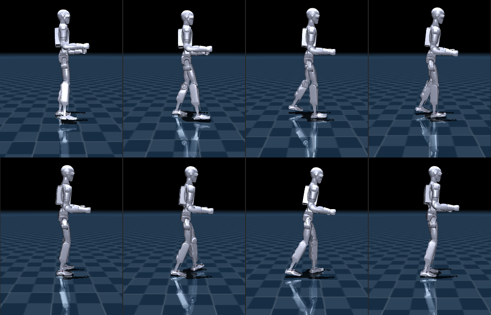

Fatima Atwi
Robotics engineering student, final year at École Centrale de Nantes
Hi! I love hard problems, and solving them with smart, efficient and sometimes unconventional methods. So far that has meant controlling a humanoid with a simulated biologically plausible network, GPU-parallel model-predictive control, and robots that navigate from language. I learn fast, my curiosity has no ceiling, and I'm open to any robotics problem worth solving.
Available from April 2027 for a 6-month end-of-studies internship. Open to relocating.
Highlights
- First-author paperIEEE-RAS Humanoids 2026
- IEEE RAS travel support awardHumanoids 2026, Santa Clara
- Learned controller on real hardwareUnitree H1-2 humanoid, LAAS-CNRS
Currently at LS2N and École Centrale de Nantes, working on localization, mapping and language-guided navigation for a mobile robot. Paper in preparation.
Selected projects

Spiking neural network control of the Unitree H1-2
A simulated 3D neural culture trained as a closed-loop locomotion controller, then deployed on the real humanoid.

Model-predictive control and imitation learning for the Unitree R1
Cross-entropy MPC in MuJoCo MJX, quantitative gait selection, and a DeepMimic-style PPO policy.
Skills
- Programming and tools
- Python, C, C++, CUDA, PyTorch, JAX, React, Git, Linux, Docker, SLURM and HPC clusters
- Machine learning and AI
- Supervised learning (regression, neural networks, decision trees, random forests), unsupervised learning (clustering, anomaly detection, Isolation Forest), deep learning (CNNs, BiLSTMs, transformers such as BERT and Whisper), recommender systems
- Learning and control
- Reinforcement learning (PPO), imitation learning (behavioral cloning, DAgger), model-predictive control (CEM), non-linear control and observers, PID, surrogate-gradient BPTT
- Robotics and simulation
- MuJoCo and MJX, ROS 2, Gazebo, MATLAB/Simulink, humanoid deployment (Unitree H1-2, R1), A* path planning, pure pursuit, sensor fusion
- Perception and navigation
- LiDAR SLAM, localization and mapping, autonomous navigation, OpenCV, CNNs, signal and image processing, vision-language models (VLM, VLA) for language-guided navigation
- Neural computation
- Spiking neural networks (LIF, STDP, short-term plasticity), three-factor learning rules (R-STDP, e-prop), reservoir computing, Brian2
- Hardware
- Arduino, Raspberry Pi, sensors and actuators, Modbus data acquisition, PCB design, CAD (Fusion 360, SolidWorks), 3D printing
Outside the lab: competitive programming (6th nationally in Lebanon, IEEEXtreme 2024 top 10% worldwide, 30+ Codeforces contests), acrylic painting and very large LEGO builds.